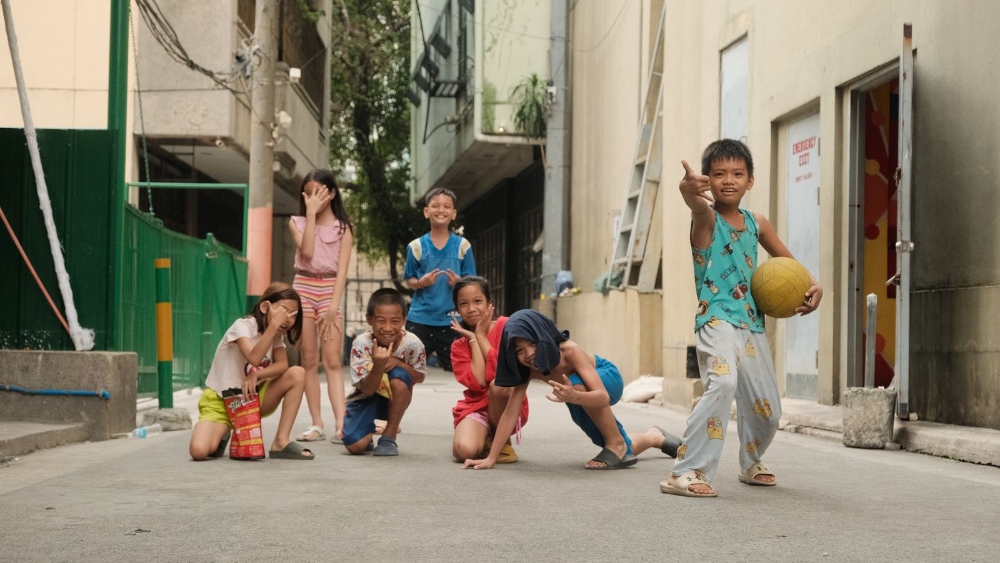
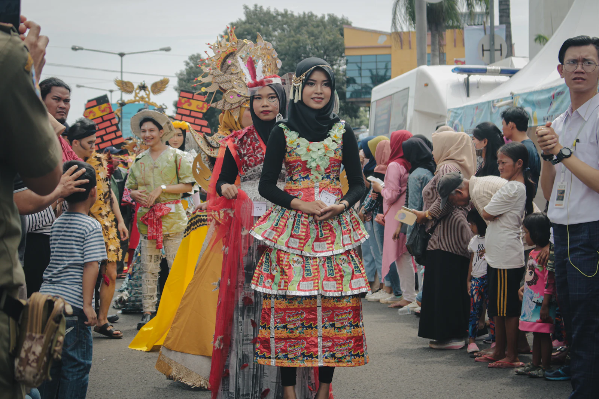
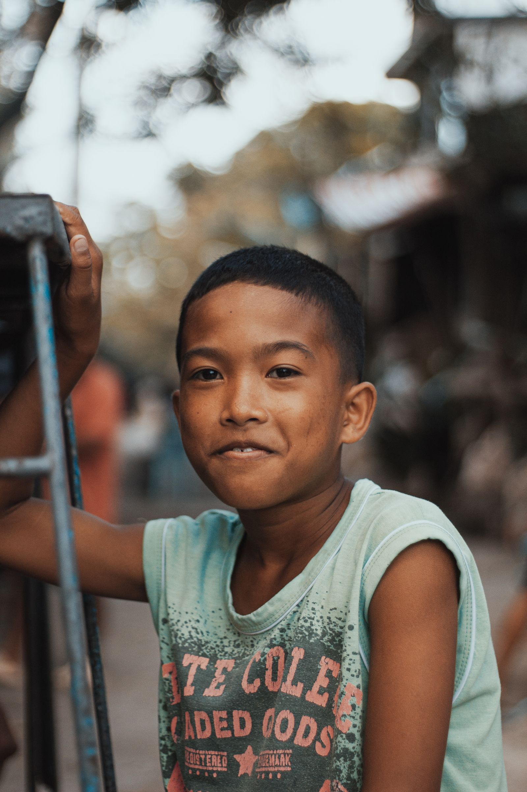

Community
Bayanihan spirit and togetherness that define barangay life.
Learn More
Life in Bocana
Community, youth, culture, sports, food, livelihood, events, and environment.
Life in Bocana
The everyday life of Barangay Bocana can be seen through these focus areas. Details about specific programs and activities will be added as they are verified.
Bayanihan spirit and togetherness that define barangay life.
Learn MoreYoung Bocanahons carrying the barangay's future forward.
Learn MoreTraditions, music, and stories shared across generations.
Learn MoreFriendly competition and teamwork among residents.
Learn MoreEveryday favorites and special dishes from the community.
Learn MoreWays residents make a living and support their families.
Learn MoreFestivals and gatherings that bring everyone together.
Learn MoreCare for the coast, water, and green spaces around home.
Learn MoreEditable content: [Add verified community programs, organizations, and activities of Barangay Bocana here] — nothing has been invented, so cards currently describe focus areas with placeholders until official details are provided.
Local Culture

Customs and practices kept alive in the barangay.
Flavors of home shared at table gatherings.

Song and rhythm that accompany community gatherings.

The Kisi-Kisi Festival and celebration traditions.

The people who give every tradition its meaning.

Narratives passed down that shape the barangay's voice.
Taste of Bocana
The flavors enjoyed in daily Bocana life. Dishes below are described generally — verified local recipes will replace these placeholders.
Simple, fresh flavors from the sea and shore — a common sight in coastal dining.
[Add official local dish description here]
Hearty provincial cooking shared on family tables across the barangay.
[Add official local dish description here]
Fruits and vegetables from the surrounding provincial land.
[Add official local produce details here]
Have a local food or recipe to feature?
Send it to the barangay and it could be added to this page as a verified community favorite.
Share a RecipeEvents
Upcoming Events
No upcoming events have been published yet.
Official announcements will appear here once released by the barangay.
Festival Events
Kisi-Kisi Festival
Festival programs and schedules are being finalized. [Add official festival event dates here]
Past Events
Past celebrations
Highlights from earlier festivals and community gatherings will be listed here. [Add official past event details here]
Community Events
Barangay meetings & gatherings
Schedules for community meetings and activities will be shared here when announced. [Add official community event details here]